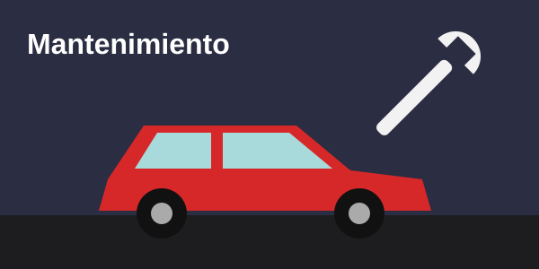

Servicio 1: Mantenimiento de autos
Un buen mantenimiento preventivo alarga la vida de tu vehículo, ahorra combustible y evita reparaciones costosas. Nuestros mecánicos certificados revisan tu auto punto por punto.

¿Qué incluye?
- Cambio de aceite y filtro de aceite
- Revisión y cambio de pastillas de freno
- Afinado de motor (bujías, filtro de aire y de combustible)
- Revisión de suspensión, llantas y alineación
- Diagnóstico computarizado (escáner)
Lista de precios
| Servicio | Tiempo estimado | Precio (Bs) |
|---|---|---|
| Cambio de aceite y filtro | 30 min | 250 |
| Cambio de pastillas de freno | 1 h | 300 |
| Afinado de motor | 2 h | 450 |
| Alineación y balanceo | 1 h | 150 |
| Diagnóstico computarizado | 30 min | 100 |
Cotiza tu servicio
Marca los servicios que necesitas:
Total estimado: Bs 0
Recomendaciones
Te sugerimos hacer el cambio de aceite cada 5.000 km y una revisión general cada 6 meses.
Agendar cita